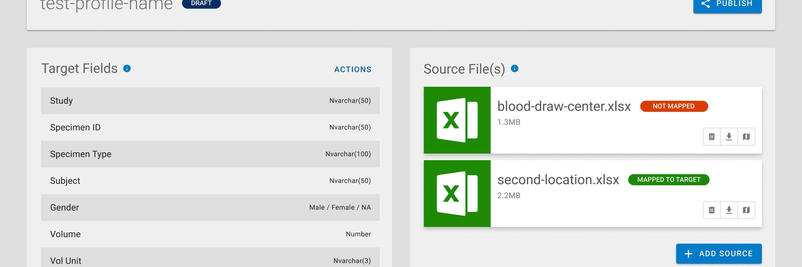
Platform One (P1)
Building a commercially-viable SaaS product from the ground up
The Challenge
Replace a 17-year old legacy application with a commercially-viable, modular platform. The primary goal was to retire a system that was simply stretched too thin. The secondary goal was to build a replacement that could be modularized and sold as a piecemeal solution.
Pre-Kickoff Insights
We planned to use a strangler pattern to replace the legacy system with new functionality. The Data Management module was chosen to be the first module built. This module bridged a gap in the legacy system and could be useful as a stand-alone app. At a very high level, this module would take data in… perform validations… transformations (as needed)… then output the data. Essentially a customizable ETL application.
Role
As UX Lead, I was tasked with designing the UI, establishing feedback channels, conducting user research, and validating solutions with users.
Un Understand
Hypothesis
We can deliver a great product for ourselves (and potential customers) by establishing a user-centered, iterative UX practice.
Defining the Problem
The Biological Sample Storage industry is complex. Storing a sample seems relatively straightforward, but the data associated with that sample is equally valuable. A large storage facility has millions of samples… a single sample can have upwards of 80 data points associated with it. Clean, accurate data is vitally important.
A manifest containing these data points is provided with the samples. These spreadsheets vary greatly… requiring a manual process to review and/or manipulate the data. This creates the opportunity for human error and inaccurate data… which requires time/expense to fix.
The Product Owner’s idea: allow User A to create a “Profile” containing “Source File(s)” that would map to “Target Fields.” User B would upload manifests into the appropriate Profile, outputting cleansed data.
Defining the Users
The Data Management Module was new functionality. This wasn’t replacing a legacy application with known users. On top of that, there were no personas to reference as I was the first UX hire. I started interviewing and shadowing our users. These interviews were recorded using an audio recorder, transcribed, and added as feedback to an Airtable database. For some of the workflow-heavy interviews, I asked the participants to join a Microsoft Teams meeting and share their screen. I would then record the meeting through Teams so I could record the users’ workflows. These audio/video files were uploaded to the database as the “Evidence” field.
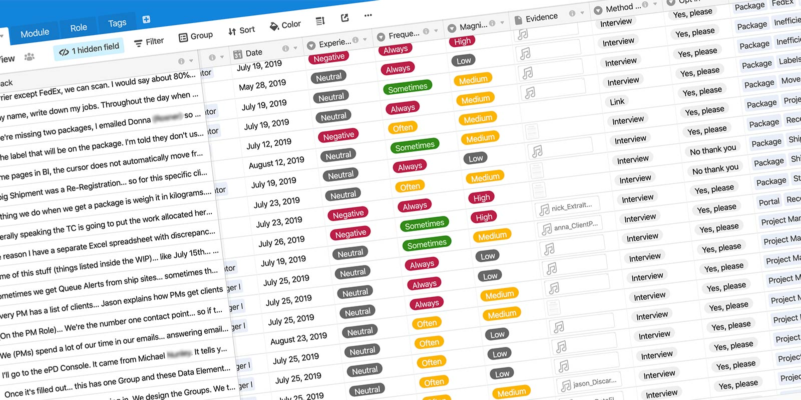
With a better understanding of the roles, I used Microsoft Forms to create persona surveys. User A was identified as a Project Manager (PM) or possibly a Client Coordinator (CC) who supports the PM. During project creation in the legacy application, the PM/CC would enter the required data fields and desired formats. Essentially, this was defining the Target Fields needed for the Profile.
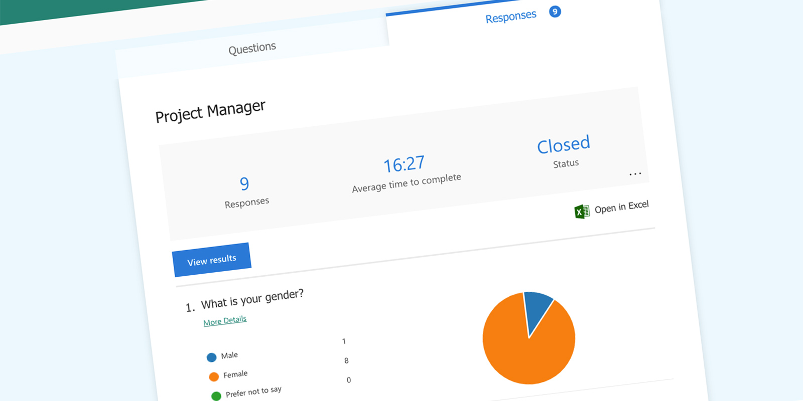
I created personas using the data collected from these surveys. Get to know Patience the PM… view her personalaunch here.
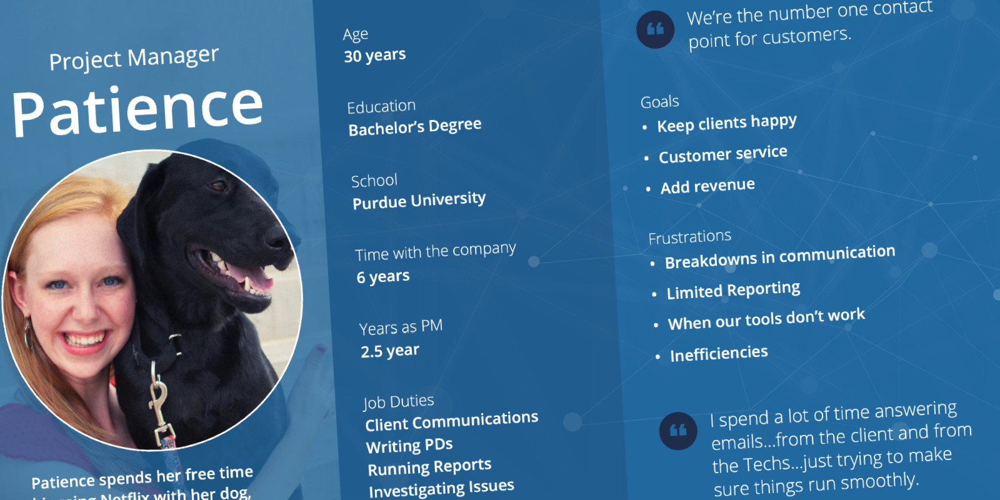
Prior to samples being registered into the system, an Operations Tech is required to upload a manifest to the project. This process is known as “Manifesting”… a task performed by experienced Techs. Manifesting is a multi-step, manual process and can be time-consuming depending on the files provided. Someone trained in manifesting was identified as User B. The Data Management Module would be a new step for Ops Techs, but would save time and reduce errors.
Pain Points Revealed
Several questions were answered while speaking with the PMs, CCs and Ops Techs. Unanswered questions centered around the communication between the users and how this new tool would be incorporated into existing workflows.
- How does an Op Tech know a Profile exists for this manifest?
- What’s the most efficient way for PMs to input the Target Fields?
- How often do example manifests (Source Files) get sent for a project?
- Would the PMs or Ops Techs be tasked with Mapping the files?
- How would Ops Techs communicate issues back to PMs?
Reframing the Problem
The Ops Tech’s workflow was dependent on PMs/CCs creating a Profile. For that reason, the team focused on addressing this workflow first. We narrowed the problem space to PMs and the creation of a Profile. A completed Profile would have Target Fields defined, Source File(s) uploaded, and those files would be mapped to the Target Fields. Future enhancements would cover the communication holes, Profile statuses, and more complex Source Files.
Integrating UX into the Team
For some teammates, this was the first time working with a UXer. As I got to know the team, I realized everyone had a different opinion of what P1 would be. In my experience, teams are more invested when they feel they have influence.
Using Microsoft Forms, I distributed a Semantic Differential Survey to the team. The goal was to see where there was agreement vs alignment, as well as define the product’s attributes.
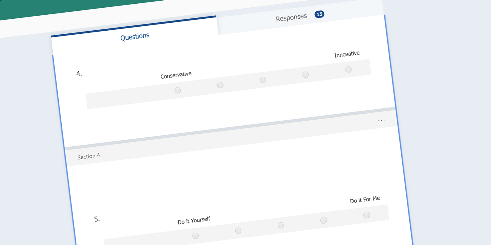
The results were collected and shared with the team. The team agreed P1 needed to be clear, organized, fast and straightforward. The areas that needed more alignment were Tailored vs Off-the-Shelf, Sufficient vs Perfect, Intuitive vs Logical. The results were posted on a team whiteboard to keep these attributes front-of-mind as we discussed features and design.
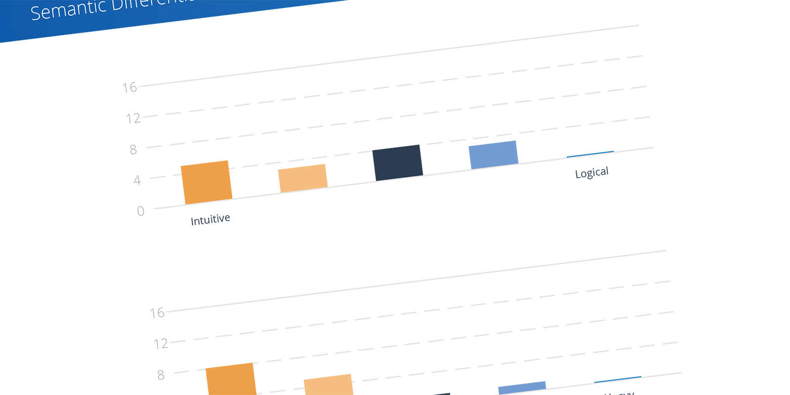
Si Simplify
CodeFreeze Design System
I created ‘CodeFreezelaunch’ before any P1 user stories were written. I recruited a Front-end Engineer I had previously worked with, who was hired to bring CodeFreeze to life. Knowing the UI was in a good spot allowed me to focus on user tasks and workflows.
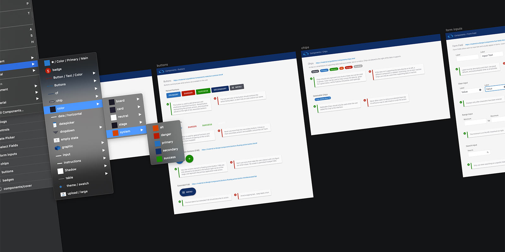
Creating a Profile
A profile consists of Target Fields, Source Files, and the mapping of Source to Targets. I worked very closely with the Product Owners to write user stories that were design agnostic. As a result, a lot of time was spent whiteboarding as a group. The first iteration can be seen below:
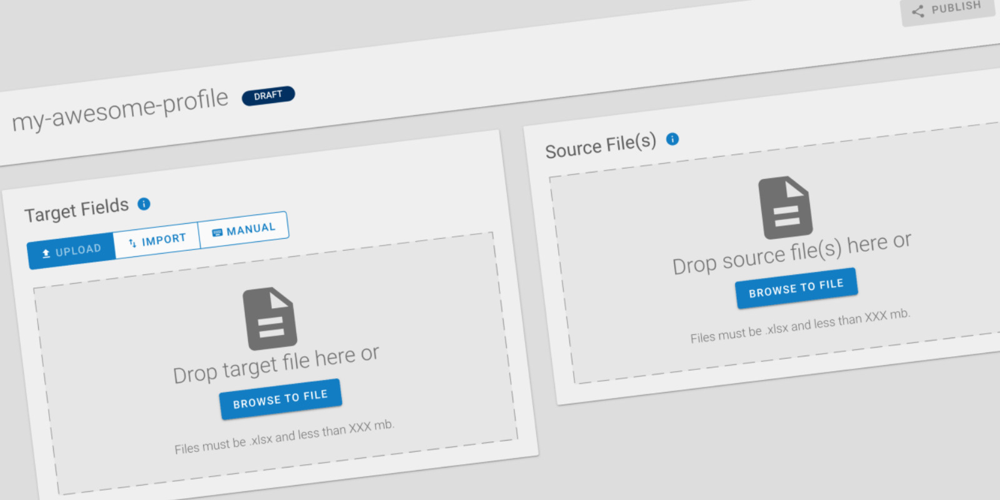
The output of a profile would be a clean data file, ready for upload into the legacy application. The Target Fields were essentially the column headers for the output file. Users can select the type of column needed (ie date, boolean, number, etc). The process of defining Target Fields would more than likely happen before receiving a manifest or example manifest from the client. Those spreadsheets will be uploaded to the profile as a Source File. A profile could have multiple Source Files and each would need to be mapped to the Target Fields.
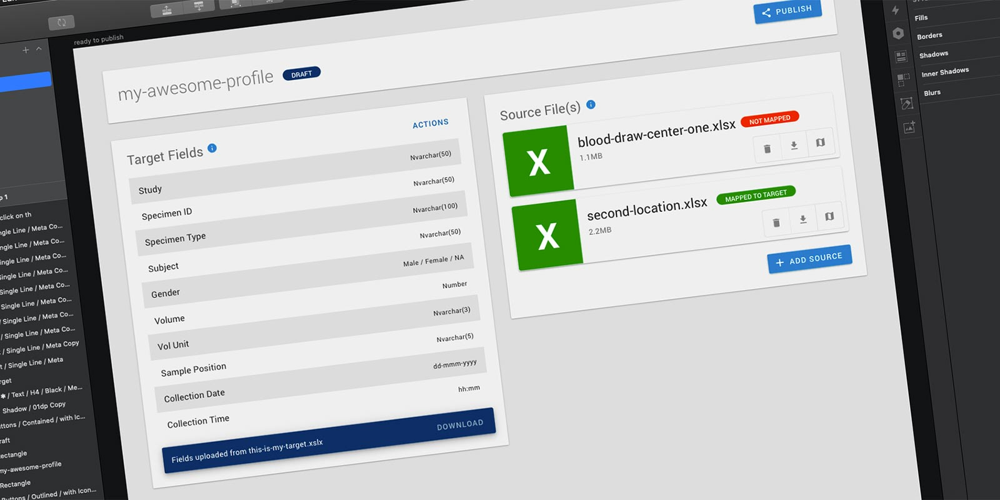
The final step of the profile creation process is completing the mapping. The system would read the .xlsx Source File and populate the dropdowns with the column headers (the first row of the data table).
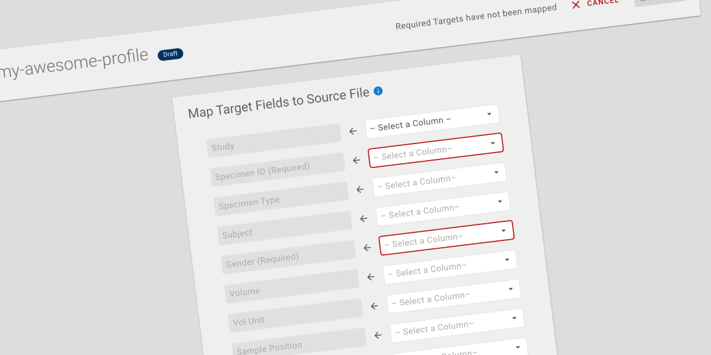
Synopsis
A Design System allowed me to produce high fidelity mock-ups to convey ideas to Product Owners and Developers. As I joined the project in the early stages, I was able to modify my existing files and be in a great spot as we started writing user stories.
Al Align
Agile UX
It’s a bit of a chicken versus egg scenario… when is a feature designed? When the user stories are written? When a developer codes it? It's not always clear. In my opinion, UX should work closely with Product Owners to define features and write stories.
I’ve seen companies struggle with injecting UX into the Agile Process. To combat this, I worked closely with Product Owners to write design agnostic user stories. I will admit this was bumpy at first as everyone got familiar with the idea… but in the end the product felt much more collaborative.
I had already established the design system… so by injecting UX earlier into the Agile process, I was able to influence the design of the solution. Working in tandem with Product Owners to write user stories allowed me to solicit user feedback or share sketches very early in the process. This effort helped keep solutions user-centered.
Prototyping
I am a big fan of Sketch and its integration with InVision. It has some shortcomings and limitations, but it does a good job of conveying workflows and overall look and feel. The auto-sync feature keeps the prototypes current with the design files for easy updating.
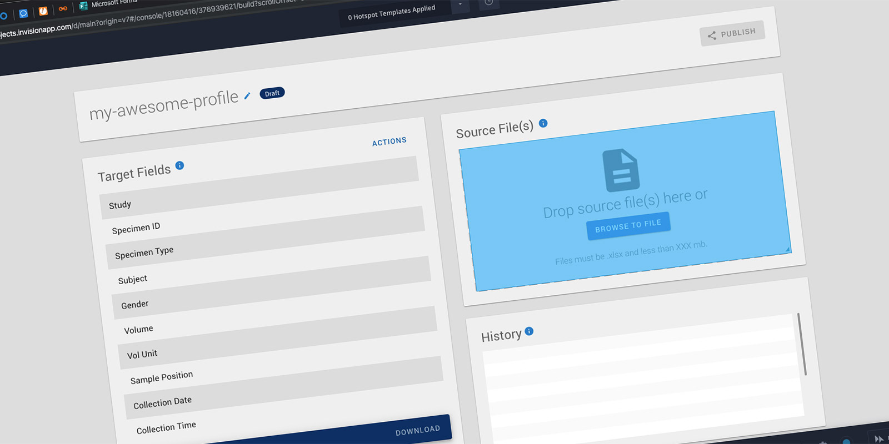
Va Validate
User Testing
After a few sprints, we had a fully functional application. I recruited six internal users to test the tool. Two participants were unable to sit with me, but I was able to schedule time with four individuals. I wrote a test script in which participants would perform a series of tasks twice… one simple mapping and another more difficult mapping.
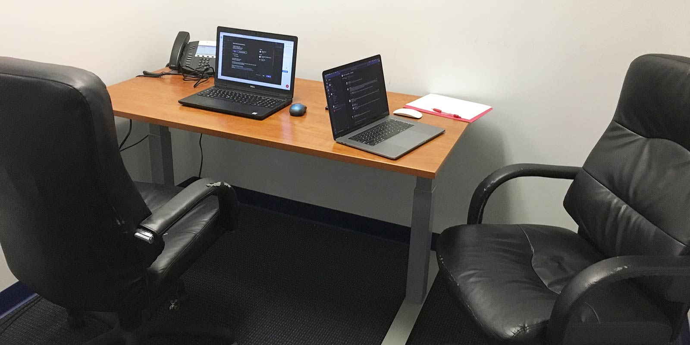
I wrote the script to help flush out answers to some of the team’s lingering questions. Namely, ‘who would be performing this task?’ and ‘when might they have all of the files necessary to create a profile?’
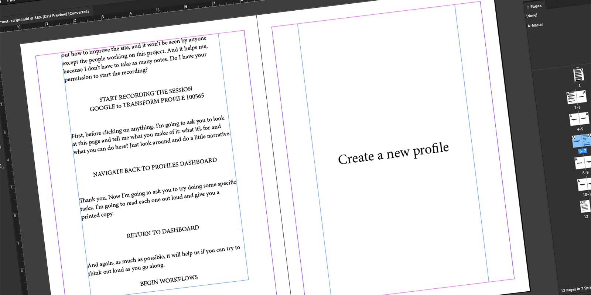
For the testing session, I created an online meeting. I joined the meeting on both laptops, allowing me to record the screen and the participant’s face.
Synthesis
Recording the sessions allowed me to re-watch the sessions and the tasks as they were performed. I took the recordings into Adobe Premiere and cut the sessions into smaller clips. These clips were combined into short videos that I shared with the larger team. The clips are also uploaded to the Airtable database for future reference.
Read-Out
Once the synthesis is complete, I schedule a read-out meeting with the stakeholders and larger team. In my opinion, user research is incomplete without a read-out meeting or a plan of action. I use Adobe InDesign to create a PDF of my findings. This is the documentlaunch I shared following this round of testing.
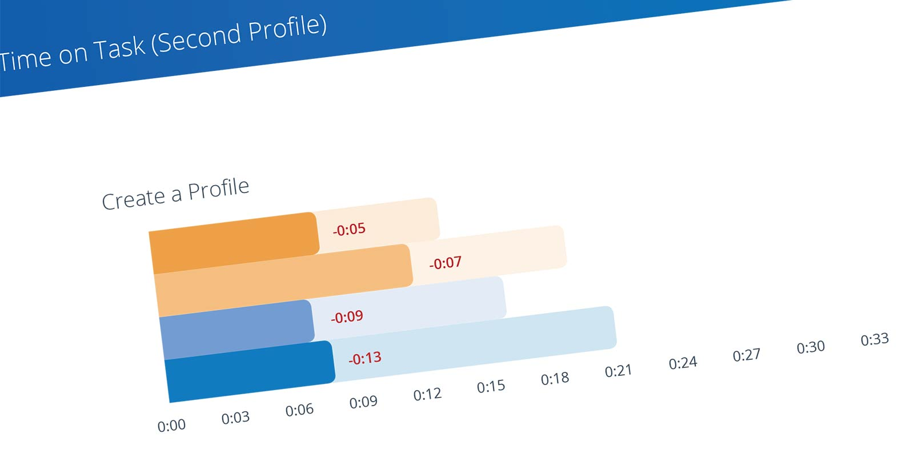
The readout document along with video clips tell a powerful story. My next steps are to take the insights learned and create user stories. Another benefit of keeping an 'Insights Database' is being able to connect user stories with video clips of usability concerns.
Takeaways…
Things I Learned
- How to incorporate UX into the Agile process earlier
- How to set up a themable design system
- New methods: slicing video clips together to tell a story
The Launch
After only six months of development, the decision was made to ‘buy not build’ when the company acquired another company along with their existing software suite.